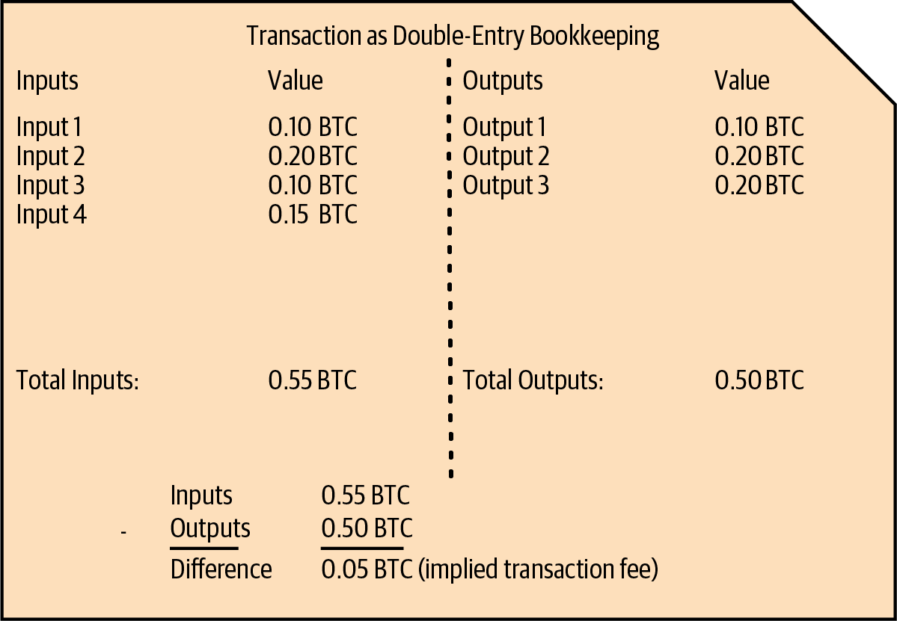
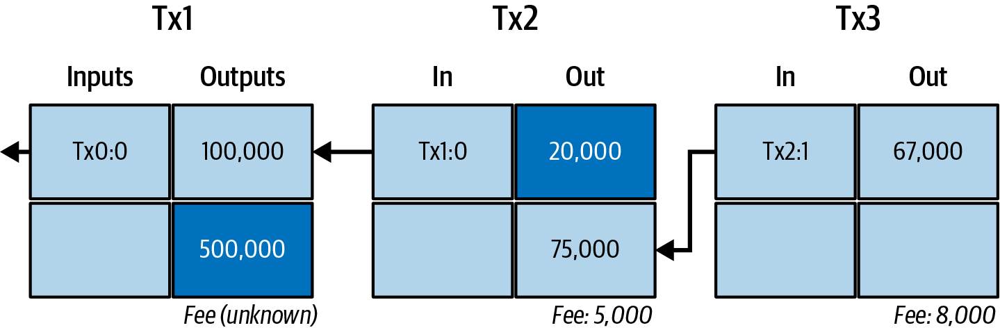
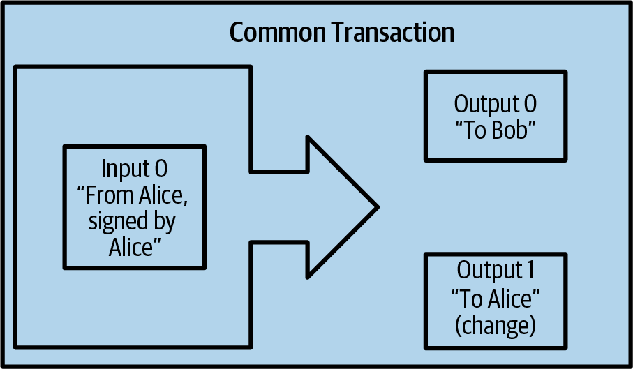
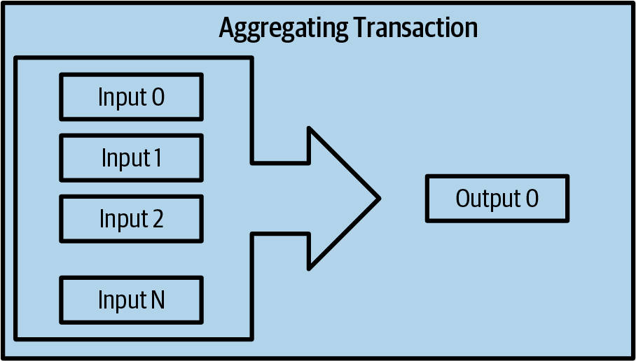
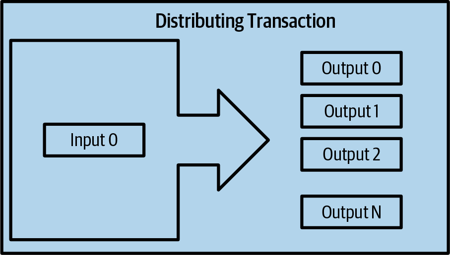
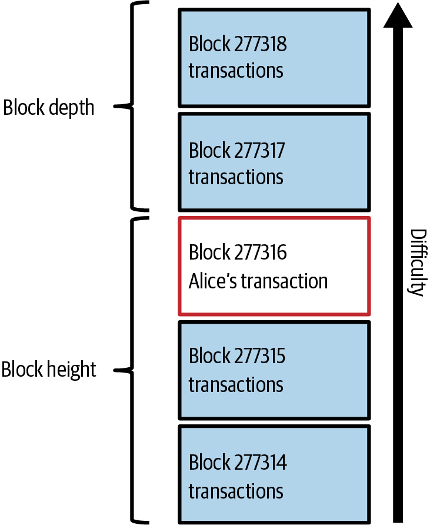
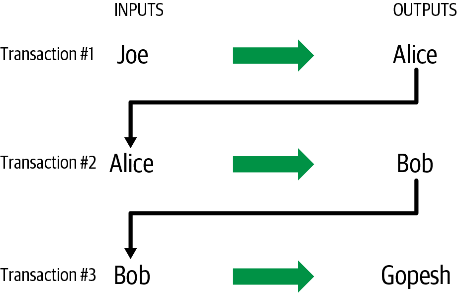

Bitcoin 工作原理
Bitcoin 系统不同于传统的银行与支付系统，它不需要对第三方的信任。在 Bitcoin 中没有中心化的可信权威机构，每位用户都可以在自己的电脑上运行软件，独立验证 Bitcoin 系统每一个方面的正确运行。 在本章中，我们将从高层视角审视 Bitcoin，方法是跟踪一笔交易在 Bitcoin 系统中的流转过程，并观察它是如何被记录到区块链——这本所有交易的分布式总账——之上的。后续章节会深入交易、网络以及挖矿背后的技术细节。
Bitcoin 概览
Bitcoin 系统由以下要素构成：持有密钥钱包的用户、在网络中传播的交易，以及通过竞争性算力生成共识区块链的矿工——这条区块链就是所有交易的权威账本。
本章中的每个示例都基于 Bitcoin 网络上一笔真实发生过的交易，模拟若干用户之间通过将资金从一个钱包发送到另一个钱包来完成的交互。在跟踪一笔交易穿越 Bitcoin 网络直至进入区块链的过程中，我们会借助 区块链浏览器 网站将每一步可视化。区块链浏览器是一种网页应用，它的作用就像 Bitcoin 的搜索引擎，允许你按地址、交易或区块进行检索，并查看它们之间的关联与流向。
常用的区块链浏览器包括：
它们都提供一个搜索功能，可以接受一个 Bitcoin 地址、交易哈希、区块号或区块哈希，并从 Bitcoin 网络中检索对应信息。每次给出交易或区块示例时，我们都会附上一个 URL，方便你自己去查询并详细研究。
|
区块浏览器隐私警告
在区块浏览器上查询信息，可能会让运营方知道你对这条信息感兴趣，并将其与你的 IP 地址、浏览器信息、过往查询记录或其他可识别信息关联起来。如果你查询的是本书中的交易，浏览器运营方至多会猜到你在学习 Bitcoin，这没什么大不了。但如果你查询的是自己的交易，运营方就有可能推断出你收到、花费过多少 bitcoin，以及当前还持有多少。 |
在网店购物
在上一章登场的 Alice 是一位新用户，她刚刚获得了人生中的第一笔 bitcoin。在 [getting_first_bitcoin] 中，Alice 与朋友 Joe 见面，用现金兑换了一些 bitcoin。此后，Alice 又额外购入了一些 bitcoin。现在，Alice 要进行她的第一笔付款交易：在 Bob 的网店购买一期付费播客节目的访问权。
Bob 的网店最近开始接受 bitcoin 付款，在网站上新增了 Bitcoin 选项。Bob 店里的商品标价仍以本地货币（美元）显示，但在结账时，顾客可以选择用美元或 bitcoin 支付。
Alice 找到想买的那期播客，进入结账页面。结账时，除了常规的支付方式外，Alice 还看到了用 bitcoin 付款的选项。购物车按当前 Bitcoin 汇率同时显示美元价格和 bitcoin（BTC）价格。
Bob 的电商系统会自动生成一个 QR 码，其中包含一份 发票（发票 QR 码。）。
与那种仅包含目标 Bitcoin 地址的 QR 码不同，这份发票是一个 QR 编码的 URI，里面包含目标地址、付款金额以及一段描述。 这样，Bitcoin 钱包应用就可以预填好用于付款的信息，并同时向用户展示一段可读的说明。你可以用 Bitcoin 钱包应用扫描这个 QR 码，看到 Alice 会看到的内容：
bitcoin:bc1qk2g6u8p4qm2s2lh3gts5cpt2mrv5skcuu7u3e4?amount=0.01577764& label=Bob%27s%20Store& message=Purchase%20at%20Bob%27s%20Store Components of the URI A Bitcoin address: "bc1qk2g6u8p4qm2s2lh3gts5cpt2mrv5skcuu7u3e4" The payment amount: "0.01577764" A label for the recipient address: "Bob's Store" A description for the payment: "Purchase at Bob's Store"
|
你可以尝试用自己的钱包扫描它，查看其中的地址和金额，但请不要真的发送资金。 |
Alice 用智能手机扫描了屏幕上显示的二维码，手机上显示出一笔金额正确、收款方为 Bob's Store 的付款，她点击 Send 授权支付。几秒钟之后（差不多就是一次信用卡授权所需的时间），Bob 就在收银端看到了这笔交易。
|
Bitcoin 网络可以处理非常小的分数金额，从 millibitcoin（千分之一 bitcoin）一直到一亿分之一 bitcoin，后者被称为 satoshi。本书在谈论大于 1 个 bitcoin 的数额以及使用小数表示法时，对 bitcoin 的复数处理沿用美元和其他传统货币的规则，例如 "10 bitcoins" 或 "0.001 bitcoins"。同样的规则也适用于其他 bitcoin 记账单位，例如 millibitcoin 和 satoshi。 |
你可以用区块浏览器查看链上数据，例如Alice 向 Bob 付款的那笔 交易。
在接下来的几节中，我们将更细致地分析这笔交易：看 Alice 的钱包是如何构造它的、它是如何在网络中传播的、又是如何被验证的，以及最后 Bob 又是如何在后续交易中花掉这笔金额的。
Bitcoin 交易
简单来说，一笔交易就是向网络声明：某些 bitcoin 的所有者授权将其价值转移给另一位所有者。新所有者随后可以再创建一笔交易，授权把这部分 bitcoin 转给下一位所有者，如此环环相扣，形成一条所有权链。
交易的输入与输出
交易就像复式记账总账中的条目。每笔交易包含一个或多个 输入，用于花费资金；同时也包含一个或多个 输出，用于接收资金。 输入与输出的总额并不一定相等。一般来说，输出的总额会比输入略少，差额即是一笔隐含的 交易手续费，由将该交易打包进区块链的矿工收取。作为复式记账分录的交易。 把一笔 Bitcoin 交易展示为一条复式记账分录。
交易中还包含每笔被花费 bitcoin（输入）的所有权证明，形式是来自所有者的数字签名，任何人都可以独立验证。在 Bitcoin 的语境里，"花费"就是对一笔交易进行签名，把价值从前一笔交易转移给由某个 Bitcoin 地址标识的新所有者。

交易链
Alice 付款给 Bob’s Store 的这笔交易，使用了某一笔以前的交易输出作为输入。在上一章中，Alice 用现金从朋友 Joe 那里换得了 bitcoin。我们把这笔交易在 一条交易链，前一笔交易的输出是下一笔交易的输入。 中标记为 Transaction 1（Tx1）。
Tx1 向一个由 Alice 的密钥锁定的输出发送了 0.001 个 bitcoin（100,000 satoshi）。她付款给 Bob’s Store 的新交易（Tx2）则将这个前序输出作为输入引用。在示意图中，我们用一条箭头表示这种引用，并把这个输入标记为 "Tx1:0"。在真实交易中，这个引用是 Alice 从 Joe 收到那笔钱时所在交易的 32 字节交易标识符（txid）。":0" 表示输出在该交易中的位置，这里指的是第一个位置（位置 0）。
如图所示，真实的 Bitcoin 交易并不会显式包含其输入的金额。要确定一个输入的价值，软件需要顺着该输入的引用，去查到被花费的前序交易输出。
Alice 的 Tx2 包含两个新输出，一个支付 75,000 satoshi 用于购买播客，另一个返回 20,000 satoshi 给 Alice 作为找零。

|
序列化的 Bitcoin 交易——即软件在发送交易时使用的数据格式——会以整数形式编码所转移的金额，使用的是链上定义的最小价值单位。Bitcoin 刚被创造出来时，这个单位还没有名字，一些开发者干脆称之为 base unit（基本单位）。后来很多用户开始叫它 satoshi（sat），以致敬 Bitcoin 的创造者。在 一条交易链，前一笔交易的输出是下一笔交易的输入。 以及本书其他一些示意图中，我们使用 satoshi 作为数值，因为协议本身就是这么用的。 |
找零
除了一个或多个支付给 bitcoin 接收者的输出之外，许多交易还会包含一个支付给付款方自身的输出，称作 找零 输出。 之所以需要找零，是因为交易输入和纸币一样，无法被部分花费。如果你在商店购买一件 5 美元的商品却用 20 美元钞票付款，那么你期望找回 15 美元。同样的概念也适用于 Bitcoin 的交易输入。如果你要购买一件价值 5 个 bitcoin 的商品，手头却只有一个价值 20 个 bitcoin 的输入可用，你就会创建一个 5 bitcoin 的输出给店主，再创建一个 15 bitcoin 的输出找零给自己（暂不考虑手续费）。
在 Bitcoin 协议层面，找零输出（以及它支付的地址，称为 找零地址）与付款输出之间没有任何区别。
值得注意的是，找零地址不必与输入对应的地址相同，出于隐私考虑，找零地址通常是钱包中新生成的地址。理想情况下，付款输出和找零输出都使用从未出现过的新地址，使两者在外观上完全一致，从而防止第三方判断哪个是找零、哪个是付款。不过为了便于说明，我们在 一条交易链，前一笔交易的输出是下一笔交易的输入。 中给找零输出加了底纹标识。
并不是每笔交易都有找零输出。没有找零的交易称为无找零交易（changeless transactions），它们只能有一个输出。无找零交易只有在花费金额恰好等于（或非常接近）输入总额减去预期手续费时才实用。在 一条交易链，前一笔交易的输出是下一笔交易的输入。 中，我们看到 Bob 创建了 Tx3，这就是一笔无找零交易，花费的是他在 Tx2 中收到的那个输出。
选币
不同的钱包在选择哪些输入用于付款时采用不同策略，这个过程称为 选币（coin selection）。
它们可能会聚合许多小输入，也可能会使用一个等于或大于目标付款金额的输入。除非钱包能聚合出恰好等于"目标付款金额加上手续费"的输入组合，否则它就需要生成一些找零。这与人们处理现金的方式非常相似。如果你总是用口袋里最大的钞票付款，最终口袋里就会塞满零钱；如果只用零钱，又往往只剩下大面额的钞票。人们会下意识地在两个极端之间寻找平衡，Bitcoin 钱包开发者也努力把这种平衡编码到程序里。
常见的交易形式
一种非常常见的交易形式是简单付款。这种交易有一个输入和两个输出，如 最常见的交易。 所示。

另一种常见形式是 合并交易（consolidation transaction），它将多个输入合并到一个输出之中（聚合资金的合并交易。）。这相当于现实中把一堆硬币和零钞换成一张大面额钞票。钱包和企业有时会生成这类交易，以整理大量的小额资金。

最后，在区块链上还经常看到一种交易形式叫 批量付款（payment batching），它向多个输出付款，对应多个收款人（分发资金的批量交易。）。这类交易常被商业实体用于分发资金，例如向多名员工发放工资。

构造一笔交易
Alice 的钱包应用包含了全部用于选择输入和生成输出的逻辑，能够按 Alice 指定的要求构造交易。Alice 只需选定目的地址、金额和交易手续费，其余工作都由钱包应用在幕后完成，她不必看到细节。重要的是，只要钱包已经知道自己控制哪些输入，它甚至可以在完全离线的状态下构造交易。 这就像在家里写好支票，之后再装进信封寄给银行——构造和签名交易并不需要保持与 Bitcoin 网络的连接。
找到合适的输入
Alice 的钱包应用首先要找到可以支付她想付给 Bob 的金额的输入。大多数钱包都会记录其管理的地址所拥有的全部可用输出。因此 Alice 的钱包里就会有一份来自 Joe 那笔交易（即她用现金兑换 bitcoin 的那笔，见 [getting_first_bitcoin]）的输出副本。 运行在全节点上的 Bitcoin 钱包应用实际上保存了每一笔已确认交易的未花费输出的副本，称为 未花费交易输出（UTXO）。 不过由于全节点占用资源较多，许多用户钱包采用轻客户端，只跟踪用户自己的 UTXO。
在本例中，这一个 UTXO 就足以支付播客的费用。如果不够，Alice 的钱包应用可能就需要像从钱包里挑硬币一样，把若干较小的 UTXO 拼凑起来，直到凑够支付播客的金额。在两种情况下都可能需要找零，下一节我们会看到钱包应用如何创建交易输出（即付款）。
创建输出
一个交易输出是通过一段脚本创建的，脚本大致表达：“此输出支付给任何能够提供与 Bob 公共地址对应的密钥签名的人。”由于只有 Bob 持有与该地址对应的密钥钱包，因此只有 Bob 的钱包才能在之后给出这样一个签名以花费这个输出。于是 Alice 用"需要 Bob 的签名"这个要求来 锁定 这笔输出价值。
这笔交易还会包含第二个输出，因为 Alice 钱包里的资金比播客的价格要多。Alice 的找零输出与给 Bob 的付款输出在同一笔交易里生成。本质上，Alice 的钱包把她的资金拆成了两个输出：一个付给 Bob，一个回到她自己手上。她可以在之后的某笔交易中花掉这个找零输出。
最后，为了让交易能够被网络及时处理，Alice 的钱包应用还会附加一小笔手续费。手续费在交易中并不会显式写出，它由输入和输出的差额隐式体现。这笔交易手续费由矿工收取，作为把该交易打包进会被写入区块链的区块的报酬。
把交易加入区块链
Alice 的钱包应用所创建的交易包含了确认资金归属并把所有权赋予新主人的全部信息。接下来，这笔交易必须被发送到 Bitcoin 网络，最终成为区块链的一部分。下一节我们将看到交易是如何成为新区块的一部分以及该区块是如何被挖出来的。最后，我们会看到这个新区块在被加入区块链之后，是如何随着后续区块的累积而获得网络越来越高的信任的。
广播交易
由于交易本身已经包含了被处理所需的全部信息，那么它如何、从哪里被发送到 Bitcoin 网络其实并不重要。Bitcoin 网络是一个点对点网络，每个 Bitcoin 节点都通过连接若干其他 Bitcoin 节点来参与其中。Bitcoin 网络的目的就是把交易和区块传播给所有参与者。
传播过程
Bitcoin 点对点网络中的节点是一些既具备软件逻辑、又拥有全部数据，能够完整验证新交易正确性的程序。节点之间的连接通常可视化为图中的边（线条），而节点本身则是节点（点）。正因如此，Bitcoin 节点常被称为"全验证节点"，简称 全节点（full nodes）。
Alice 的钱包应用可以通过任何类型的连接（有线、Wi-Fi、移动网络等）将这笔新交易发送给任意一个 Bitcoin 节点，也可以发送给另一个程序（例如某个区块浏览器），由它再转发到节点。她的 Bitcoin 钱包不必直接连接到 Bob 的 Bitcoin 钱包，她也不必使用 Bob 提供的网络连接——尽管这两种方式同样可行。任何一个 Bitcoin 节点收到此前未见过的有效交易后，都会把它转发给所有与之相连的其他节点，这种传播技术被称为 gossiping。借此机制，交易会迅速在点对点网络中扩散，几秒钟内就能到达大部分节点。
Bob 的视角
如果 Bob 的 Bitcoin 钱包应用直接连接到 Alice 的钱包应用，那么 Bob 的钱包应用可能会第一个收到这笔交易。即便不是，Alice 的钱包通过其他节点转发，几秒之内这笔交易也会传到 Bob 的钱包。Bob 的钱包会立即识别出 Alice 的交易是一笔流入付款，因为其中包含一个可由 Bob 的密钥兑现的输出。Bob 的钱包应用还能独立验证该交易格式良好。如果 Bob 自己运行了全节点，他的钱包还能进一步验证 Alice 的交易只花费了有效的 UTXO。
Bitcoin 挖矿
Alice 的交易现在已经在 Bitcoin 网络中传播开来。但它要真正成为 区块链 的一部分，必须先被一个称为 挖矿 的过程纳入某个区块，并且该区块要被全节点验证通过。详细解释见 [mining]。
Bitcoin 的防伪系统建立在计算之上。交易被打包进 区块。每个区块都有一个非常小的区块头，必须按某种特定方式构造，构造一个合规的区块头需要巨大的计算量，但验证它是否正确却只需要极少的计算量。 挖矿过程在 Bitcoin 中承担两个用途：
-
矿工只有创建出遵循 Bitcoin 全部 共识规则 的区块，才能获得正当的收入。因此，矿工通常被激励在自己挖出的区块以及它们所基于的链上只包含有效的交易。这让用户可以选择基于一种"以信任为基础"的假设：区块中的任何交易都是有效交易。
-
当前每挖出一个区块都会创造新的 bitcoin，有点像中央银行印钞。每个区块创造的 bitcoin 数量是有限的，并按固定的发行计划随时间递减。
挖矿在成本与回报之间维持着精妙的平衡。挖矿要消耗电力来求解一个计算问题。成功的矿工会以新生成的 bitcoin 和交易手续费的形式获得 奖励。 然而，只有当矿工的区块里只包含有效交易时，才能拿到这份奖励，而"什么算有效"由 Bitcoin 协议的 共识 规则决定。这种精妙的平衡为 Bitcoin 提供了无需中心化权威的安全性。
挖矿被设计成一种去中心化的彩票。每个矿工都可以通过创建一个 候选区块（candidate block）来"打"一张属于自己的彩票，候选区块里包含他们想要打包的新交易以及若干其他数据字段。矿工把这个候选区块输入到一个特别设计的算法中，把数据打乱（即"哈希"），产生看起来与输入毫无关联的输出。这个 哈希 函数对相同输入总会产生相同的输出，但对一个新的输入——哪怕和之前输入仅相差一点——也没有人能预测它的输出会是什么样子。如果哈希函数的输出符合 Bitcoin 协议规定的某种模板，矿工就赢得了这场彩票，Bitcoin 用户便会接受这个区块及其交易为一个有效区块。如果输出不符合模板，矿工就稍微改动一下候选区块再尝试一次。截至本书写作时，矿工平均要尝试大约 168 万亿亿次候选区块才能找到中奖组合——这也就是哈希函数需要被运行的次数。
但是，一旦找到中奖组合，任何人只需把哈希函数运行一次就能验证该区块是否有效。这就让一个有效区块成为一种"创建时极费力气、验证时却几乎不费力气"的东西。这种简单的验证过程能够以概率方式证明工作量已经被付出，因此，用来产生该证明所需的数据——也就是这个区块——便被称为 工作量证明（proof of work，PoW）。
交易按照手续费率从高到低、并结合一些其他标准，被加入到新区块中。每个矿工一收到上一个区块（这意味着别的矿工赢得了上一轮彩票），就立刻开始挖一个新的候选交易区块。他们会立刻创建一个新的候选区块，将其与上一个区块绑定，填入交易，开始为该候选区块计算 PoW。每个矿工都会在自己的候选区块中加入一笔特殊交易，把区块奖励加上候选区块中所有交易的手续费总和支付给矿工自己的 Bitcoin 地址。如果他们找到一个解使候选区块变为有效区块，那么在该区块被加入全球区块链、奖励交易变得可花费之后，矿工就拿到了这份奖励。参与矿池的矿工则会把软件配置成把奖励指给矿池的地址。然后矿池再按照各矿工贡献的工作量比例，把奖励的一部分分发给池中的成员。
Alice 的交易被网络收下，进入到未验证交易的池中。在被某个全节点验证通过后，它被纳入一个候选区块。 在 Alice 的钱包首次广播这笔交易之后大约五分钟，一位矿工为这个区块找到了解，并将其向网络公告。其他每个矿工验证完这个获胜区块之后，便启动一轮新的彩票去生成下一个区块。
包含 Alice 交易的获胜区块成为区块链的一部分。包含 Alice 交易的这个区块算作她这笔交易的一次 确认（confirmation）。在包含 Alice 交易的区块在网络中传播之后，要想构造一个包含 Alice 交易另一种版本（例如一笔不付给 Bob 的交易）的替代区块，就必须付出与全体 Bitcoin 矿工生成一个全新区块相当的工作量。当存在多个可选的备选区块时，Bitcoin 全节点会选择总 PoW 最多的那条有效区块链，称为 最佳区块链（best blockchain）。要让整个网络接受一个替代区块，还需在替代区块之上再挖出一个新区块。
也就是说，矿工面前有一个选择。他们可以配合 Alice，构造一笔替代她付给 Bob 的交易，比如让 Alice 把原本付给 Bob 的钱中一部分分给矿工。这种不诚实的行为需要他们付出创建两个新区块的努力。相反，诚实的矿工只需创建一个新区块，就能拿到他们所打包交易的全部手续费再加上区块补贴。通常来说，为了一笔不大的额外付款而付出创建两个区块的高昂代价，远远不如老老实实创建一个新区块来得划算，因此一笔已确认的交易被刻意更改的可能性微乎其微。对 Bob 来说，这就意味着他可以开始相信，Alice 的这笔付款是可靠的。
|
你可以查看包含 Alice 这笔交易 的区块。 |
在包含 Alice 交易的区块被广播之后大约 19 分钟，另一位矿工挖出了一个新区块。由于这个新区块构建在包含 Alice 交易的区块之上（这给 Alice 的交易带来了第二次确认），现在要改变 Alice 的交易就需要挖出两个替代区块——再加上一个建立在它们之上的新区块——总共三个区块才能让 Alice 把付给 Bob 的钱要回去。每一个建立在包含 Alice 交易的区块之上的新区块，都算作一次额外的确认。随着区块一层层堆叠，逆转该交易的难度越来越大，Bob 对 Alice 的付款的信心也越来越强。
在 被打包进区块的 Alice 的交易。 中，我们可以看到包含 Alice 交易的区块。在它之下，是几十万个相互链接形成一条区块链的区块，一直可以追溯到 #0 号区块，即 创世区块（genesis block）。随着新区块"高度"不断增加，整条链的计算难度也水涨船高。按照惯例，任何确认数超过六个的区块都被认为极难更改，因为要重新计算六个区块（再加上一个新区块）需要付出巨大的算力。我们将在 [mining] 中更详细地考察挖矿过程，以及它是如何不断累积信任的。

花费这笔交易
现在 Alice 的交易已经作为一个区块的一部分嵌入到区块链中，对所有 Bitcoin 应用都是可见的。每个 Bitcoin 全节点都能独立验证这笔交易是有效且可被花费的。全节点会验证这笔资金从它最初在某个区块中被生成，到经过每一笔后续交易，一直流转到 Bob 地址的全过程。轻客户端则可以通过确认该交易确实在区块链中、且其后又挖出了若干区块，对付款做部分验证，从而获得"矿工已经为此投入了大量算力"的保证（见 [spv_nodes]）。
Bob 现在可以花费这笔交易（以及其他交易）的输出了。例如，Bob 可以通过将 Alice 那笔播客付款的价值转给新的所有者，来支付承包商或供应商。当 Bob 花掉从 Alice 和其他顾客那里收到的款项时，他就延长了这条交易链。假设 Bob 给他的网页设计师 Gopesh 付款，购买一个新的网页设计，那么交易链就会变成 Alice 的交易作为从 Joe 到 Gopesh 的交易链中的一环。 所示的样子。

在本章中，我们看到了交易是如何构成一条链，把价值从一位所有者传递给下一位所有者的。我们也跟踪了 Alice 的交易，从它在钱包中被创建开始，经过 Bitcoin 网络，再到把它记录到区块链上的矿工。在本书剩下的部分，我们将逐一深入钱包、地址、签名、交易、网络，最后到挖矿这些具体技术的背后。